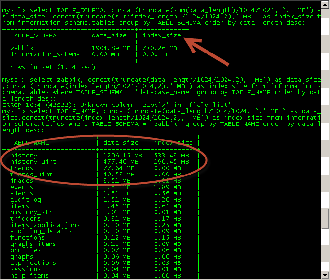
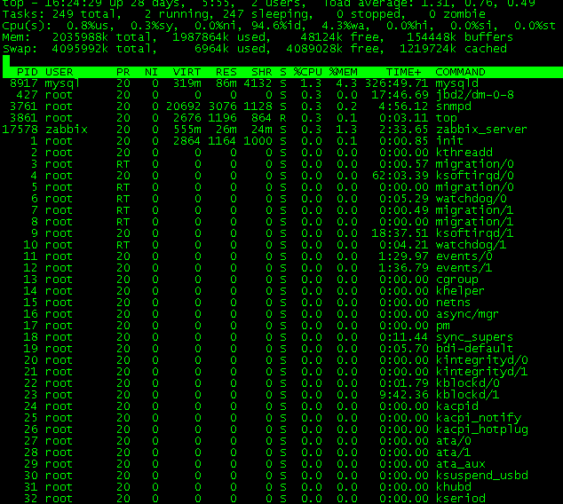

- 首页
- 文章
- 关注
- 订阅专栏
- 专家
- 网站导航
- 注册
- 登录
- 手机阅读
- 搜索
- 写文章
原创 推荐
Zabbix中文使用手册
一、Zabbix简介
二、Zabbix使用
2.1 Zabbix框架介绍
在浏览器中输入http://192.168.0.189进入监控软件登陆界面（图二），登陆用户名和密码为network，登陆后的界面如图三所示。
图二：登录界面
图三：监控软件框架图
整个监控软件界面共分为七部份，分别是：浏览器栏、一级菜单栏、二级菜单栏、用户设定栏、时间条和图形显示区。
2.2 windows监控代理介绍
信息部所使用的的zabbix版本为2.0；数据据版本mysql5.1；zabbix客户端代理安装在c:\zabbix目录下，该文件夹大小占用600k~1M；成功安装后在系统中生成服务“Zabbix Agent”,服务启动方式为自动（如图一所示）；监控状态下windows监控代理每天（24小时）的数据传输量是14.0625K，对系统性能的影响小到可以可以忽略不计。当监控参数约为100个时（其中基本参数66个，IIS或SQL参数16到27个不等），每分钟取一个性能值（100*60*24=14400Byte）。
图一：zabbix agent服务图
2.3 重要的监控参数介绍
在Windows操作系统中，查看系统的性能可以通过系统自带的性能监视器查看操作系统的性能指标（如图二五、二六所示）。
图二五：windows性能监视器

图二六：windows性能监视器
Zabbix可以通过相关参数直接获取windows系统的监控值并以图形的方式呈现。下面列出一些常见的windows监控参数。
Combined CPU Utilization % CPU利用率
Physical Disk Percent Idle Time 物理磁盘空闲比
Paging File % Usage 虚拟内存利用率
Average Read Transfer Time to Disk _Total 磁盘平均读周期
Average Write Transfer Time to Disk _Total 磁盘平均写周期
IIS Current Connections IIS当前连接数
ASP.Net Requests/Sec .NET请求数
SQL: Number of Connections SQL连接数
SQL: % Processor Time SQL的CPU利用率
SQL: Number Failed Jobs SQL失败的作业数
2.4 菜单栏介绍
2.4.1一级菜单栏 “监控”Monitoring项（图三）提供监控设备的详细数据，共十项二级菜单，包括：“仪表盘”项Dashboard、“总览”项Overview、WEB项、“最新数据”项Latest data、“触发器”项Triggers、“事件”项Events、“图形”项Graphs、“多图显示”项Screen、“拓扑图”项Maps、IT Services项。

图三：Monitoring菜单
2.4.2一级菜单栏Inventory“资产”项（图四）主要记录被监控设备的配置清单（较少使用）。二级菜单包括资产总览及主机项。
图四：Inventory菜单
2.4.3一级菜单栏Reports“报告”项（图五）主要提供被监控设备的性能报告（较少使用）。二级菜单包括“可用性报告”Avaliablity report、“前100个触发数据”Triggers top 100、“柱形图”Bar reports。
图五：Reports菜单
2.5 Zabbix常用功能介绍
2.5.1 设备故障事件详情
登入zabbix后首先进入“maps”项查看整体网络的状况，存在问题的服务器会显示警告状态（如图六所示）。点击该问题服务器后在弹出的菜单中选择“status of triggers”可查看该问题的具体描述（如图七所示），在图七中详细记录了问题服务器的主机名称、问题等级、问题的持续时间等状态，其中名称项“name”中记录了触发问题的原因，点击该栏会弹出触发器的菜单项，其中的图形“graph”项中以图形方式显示数据（如图八所示）。本例中服务器故障的触发原因是“Low Percent free disk space on 192.168.0.58 volume c:”C盘空间不足，还可以通过图形项“graph”中找到该服务器显示C盘占用空间（如图九所示），需要注意的是要选择正确的组“group”和主机“host”及显示的图形“C:Used Disk Space Pie Graph”。
图六：maps状态图
图七：服务器事件图
图八：服务器故障事件数据图
图九：C盘空间占用图
2.5.2 组“group”的说明
按信息部规划分为多个组，对应关系如下表所示：
2.5.3 各组主机“Host”的说明
主机“host”表示对应的服务器（包括支持的网络设备，操作系统、虚拟操作系统等），当选中组“group”后会在主机“host”栏中显示该组对应的主机设备，各组对应的主机如下表所示。
2.5.4 时间条说明
在图形显示项中最上层的是时间状态栏。通过时间栏可选择按每小时、每2小时、每3小时、每6小时、每12小时、每天、每周、每2周、每月、所有天数这些方式查看图形。如图十八、十九、二十、二十一所示。
图十八：时间轴图
图十九：每小时图
图二十：每天图
图二十一：所有天数图
时间条除了可以选择按不同的时间点显示外，还可以通过拉动时间条方块的方式显示特定时间的状态图，如图二十二所示。
图二十二：时间条图
在图二十二中，上面箭头是时间条，下面箭头表示详细的时间。本例中选择按每小时方式显示，下半部份的时间则以分钟的方式显示。当移动时间条时，图形和下半部份的时间一起变化。
图二十三：时间说明图
除了上面几种方式查看图表外，也可以直接选定相应的曲线查看详细的数据图，如图二十三。上图中第2处即为手工选定方式查看数据，其中图中灰色部份（标识1）表示下班时间，白色部份表示上班时间（周一至周五，8：30至17:30）。
2.5.5 常见图形“Graph”的说明
当选中主机所有的组“group”和相应的主机“host”后，就需选择和该主机相关的显示图形，常用的性能监控图有以下几种。
C: Used Disk Space Pie Graph
C盘可用空间图，记录C盘整体空间大小和已使用空间的详细值和占用百分比，当C盘的可用空间低于整个C盘的5%时会触发“C盘可用空间不足5%的报警，如图十所示。
图十：C盘空间占用图
CPU, Disk % Utilization
CPU、磁盘及虚拟内存利用率图，记录虚拟内存使用率“Paging File(_Total)\% Usage”、物理磁盘空闲率“PhysicalDisk(_Total)\% Idle Time”及CPU使用率“Processor(_Total)\% Processor Time”。其中10分钟内磁盘空闲利用率低于30%或10分钟内CPU利用率达到90%将触发报警。如图十一所示。
图十一：CPU、磁盘及虚拟内存利用率图
Interface Traffic
网卡流量图，记录设备的网卡流量图。网卡流量统计分为出、入两个方向“net.if.in[{IPADDRESS}]”“net.if.out[{IPADDRESS}]”，如图十二所示。
图十二：网卡流量图
Local File Systems % Free
逻辑磁盘空闲状态图，记录磁盘的空间使用率“vfs.fs.size[c:,pfree]”。对于系统不存在的磁盘，监控值显示“no data”,如图十三所示。
图十三：磁盘空间使用图（空闲率）
Memory Usage
内存使用图，记录整体内存大小“vm.memory.size[total]”及内存可用空间大小“vm.memory.size[free]”。如图十四所示。
图十四：内存空间图
Read/Write Disk Response Time
磁盘读／写响应时间，记录物理磁盘的读响应时间“PhysicalDisk(_Total)\Avg. Disk sec/Read”以及写响应时间“PhysicalDisk(_Total)\Avg. Disk sec/Write”。其中在10分钟内如果磁盘读操作时间超过30ms或写操作时间超过50ms将触发报警提示。如图十五所示。
图十五：磁盘读写响应时间图
MicrosoftSQLServerConnJob
数据库性能图，记录数据库软件（包括sql2000、sql2005、sql2008）性能。每秒完全扫描次数“SQLServer:Access Methods\Full Scans/sec”、失败退出的作业数“SQLAgent:Jobs(_Total)\Failed jobs”、当前与SQL Server连接的用户数“SQLServer:General Statistics\User Connections”、每秒大容量复制的数据量（KB）“SQLServer:Databases(_Total)\Transactions/sec”。如图十六所示。
图十六：SQL Server性能图
IIS Counters Overview
WEB性能图，记录WEB服务器的连接数“Web Service(_Total)\Current Connections”及当前asp.NET请求数“ASP.NET\Requests Current”。如图十七所示。需注意WEB服务器默认最大的连接数为4000（4K）。
图十七：web服务性能图
三、Zabbix其它功能说明
3.1最新数据last data
最新数据“last data”用来显示该主机所有的监控数据（记录主机最后获取的数据值，也可以图形显示），登录后点击“Monitoring”-“last data”进入该选项。
该选项显示的内容会随主机监控参数的不同而变化，对于windows主机，主要包含以下内容（如图二十四所示）：
图二四：last data图
名称“Name”部份用于描述监控的内容；最后更新时间“last check”用于显示最新数据的更新时间；最新数据“last value”用于显示最新的监控值；更改“change”表示本次数据与上次数据的差值；历史“history”显示该监控项的历史图形。
3.1.1 可用性“Availability”
图二七：availability图
可用性“Availability”项主要记录内存和磁盘的可用性共包含9项内容，分别是：
Free disk space on c: C盘可用空间
Free disk space on d: D盘可用空间
Free memory 可用内存空间
Memory Commit Limit (RAM plus Page File) 内存可用数（包括虚拟内存）
Percent Free disk space on c: C盘可用空间百分比
Percent Free disk space on d: D盘可用空间百分比
Total disk space on c: C盘容量
Total disk space on d: D盘容量
Total memory 内存大小
3.1.2 CPU
CPU项（如图二八所示）主要记录CPU的性能及CPU的使用情况共包含6项内容：
图二八：CPU图
Combined CPU Utilization % CPU处理非闲置进程的百分比
CPU Count CPU内核数量（个数*核*线程数）
CPU Utillization CPU利用率
Processor load CPU负载（一分钟）
Processor load15 CPU负载（十五分钟）
Processor load5 CPU负载（五分钟）
3.1.3 磁盘“DISK”
DISK项（如图二九所示）记录磁盘的性能，包括磁盘的读、写、队列的传输及空闲使用等指标，共包含5项内容：
图二九：DISK图
Average Read Transfer Time to Disk _Total 磁盘平均读响应时间
Average Write Transfer Time to Disk _Total 磁盘平均写响应时间
Avg. Combined(Read/Write) Transfer Operation to Disk 磁盘读写响应时间
Physical Disk Avg. Queue Length 磁盘平均数据队列响应
Physical Disk Percent Idle Time 磁盘空闲率
3.1.4 文件系统“Filesystem”
Filesystem项（如图三十所示）记录磁盘文件传输时队列的磁盘传输时间，共2项内容：
图三十：Filesystem图
Average disk read queue length 磁盘队列读周期（平均）
Average disk write queue length 磁盘队列写周期（平均）
3.1.5 通用“General”、内存“Memory”、操作系统“OS”
General项记录主机的开机时间，而Memory项主要记录虚拟内存的利用率，OS记录主机的线程数量（如图三一所示），共3项内容：
图三一：Memory、General、OS图
Host uptime (in sec) 主机已运行时间
Paging File % Usage 虚拟内存利用率
Number of threads 主机上运行的线程数量
3.1.6 网络“Network”
Network项（如图三二）记录主机网卡的流量，包括两个方向（IN、OUT），共2项内容：
图三二：network图
nic0_in 进入网卡的流量
nic0_out 经网卡出去的流量
3.1.7 性能“Performance”
Performance项（图三三）记录磁盘的性能，包括逻辑磁盘和物理磁盘的性能，共3项目内容：
图三三：Performance图
Average disk read queue length 读取请求(磁盘在实例间隔中列队的)的平均数
Physical Disk Avg. Queue Length 磁盘上平均的请求数量
Physical Disk Current Queue Length 磁盘上当前的请求数量
3.1.8 IIS
IIS项（图三四）记录IIS及WEB相关的性能值，包括服务的状态和相关的性能点，共9项内容：
图三四：IIS图
HTTP SSL: Service State SSL服务状态
IIS Admin: Service State IIS Admin服务状态
IIS Current Anonymous Users 当前IIS匿名访问用户数
IIS Current Connections IIS当前连接数
IIS Current NonAnonymous Users IIS当前非匿名用户数
IIS Get Requests/s IIS Get请求数/秒
IIS Head Requests/s IIS Head请求数/秒
IIS Post Requests/s IIS Post请求数/秒
Microsoft IIS: Service State IIS服务状态
3.1.9 MSSQL
MSSQL项（图三五）记录microsoft SQL数据库的性能，包括服务状态及相关性能值，共15项内容：
图三五：MSSQL图
SQL: Buffer cache hit ratio SQL缓冲管理器/缓冲命中率
SQL: Data File Size 数据库文件大小
SQL: Database Pages SQL缓冲管理器/数据库页
SQL: Full Tables Scans/sec SQL访问方法/完全访问/秒
SQL: Lazy writes/sec SQL缓冲管理器/惰性写入/秒
SQL: Lock Waits per second SQL锁等待/秒
SQL: Log File Size 日志文件大小
SQL: Number Failed Jobs 失败的作业数
SQL: Number of Connections 当前的SQL连接数
SQL: Number of Deadlocks per second SQL每秒死锁数
SQL: Service State - SQL Server SQL服务状态
SQL: SQLServer Buffer Manager Total pages SQL缓冲管理器/全部页
SQL: Target Server Memory SQL目标服务器内存
SQL: Total Server Memory SQL总的服务器内存
SQL: Transactions per second SQL每秒大容量复制的数据量
3.2 报表功能Reports
在zabbix中关于报表的功能有三项：
Avaliability report：（图三六）整个系统可用的系统报表提供过滤功能。

图三六：avaliability report图
Most busy triggers top 100：（图三七）提供最常用的triggers 预览。

图三七：triggers top 100图
Bar report ：（图三八）可定制报表可以报多个报表整合到一起。

图三八：bar report图
3.3 相关界面
图三九：面板页
四、附加说明
4.1 zabbix架构
Zabbix支持多种网络方式下的监控，可通过分布式的方式部署和安装监控代理，整个架构如（图四十）所示。
图四十：架构图
4.2 zabbix数据大小
2.2中详细介绍了数据在zabbix中的存储方式，对于单个监控值zabbix在后台数据库中会存入三个数值（最大值、最小值、平均值），现阶段数据库空间占用（30台设备44天数据）情况（如图四一）所示。
图四一：数据库大小
4.3 zabbix性能
Zabbix存在的性能瓶颈主要在于磁盘的性能（数据库的写操作），而CPU及内存占用相对较低，如图四二、图四三所示。
图四二：系统性能
图四三：数据库性能